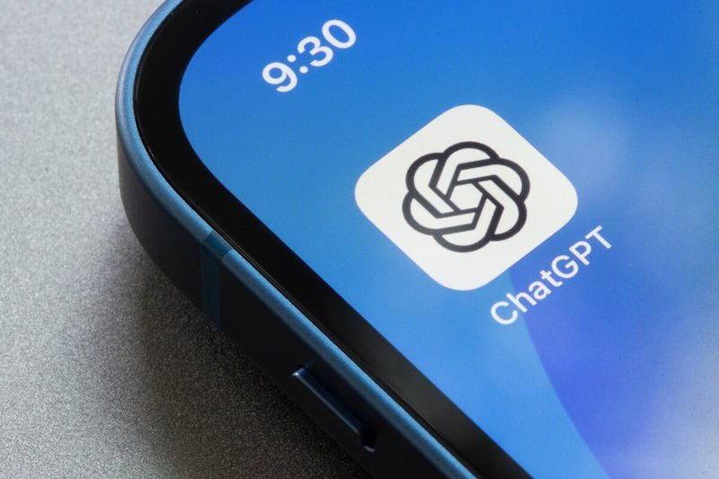
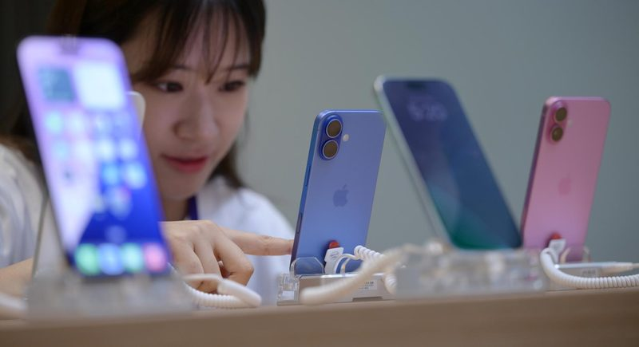
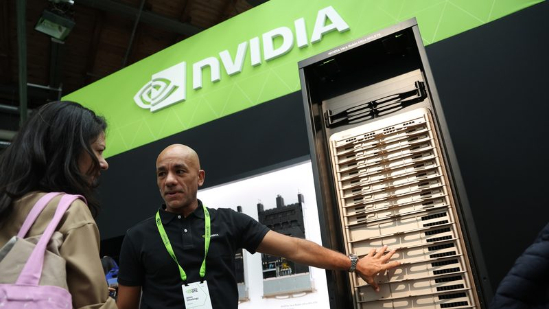
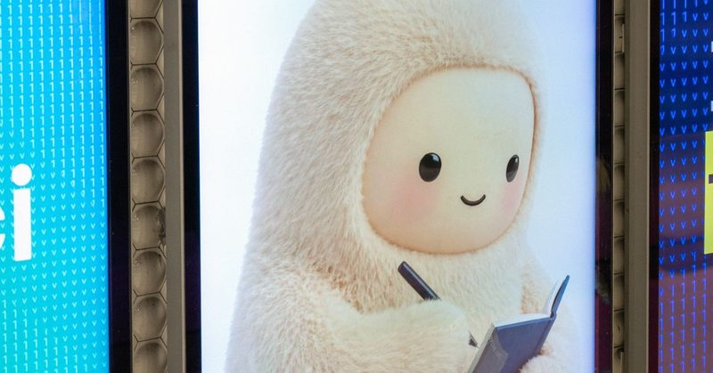
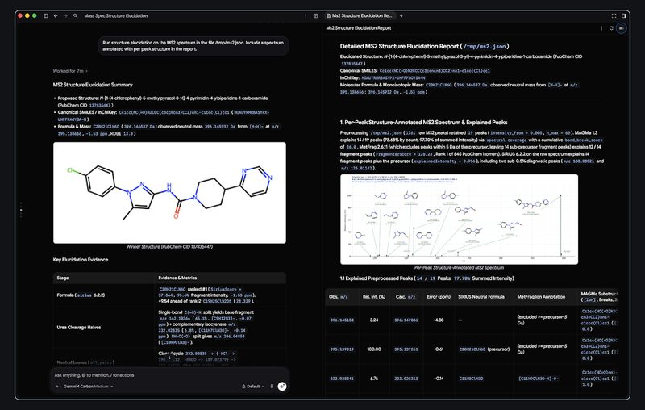
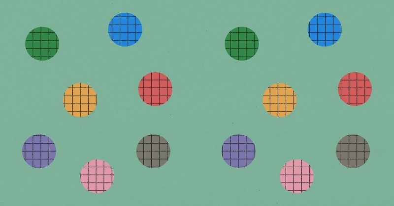
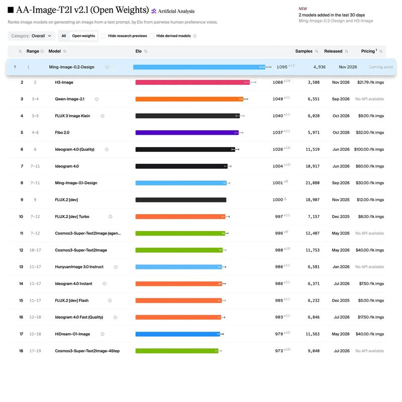

今日頭條
GPT-6.2 修正計費錯誤，額度更快用完 PLUS：韓國公平會指 Apple 以未上線 AI 功能廣告 iPhone 16
本期重點：OpenAI 承認 GPT-6.2 上線時少算用量，修正後付費用戶會更快碰到額度上限；韓國公平會認定 Apple 以尚未提供的 AI 功能宣傳 iPhone 16，進入裁罰審議。另有 Nvidia 傳暫停出貨東南亞四國、英國金融監理機關不滿 Meta 拒絕合測 Muse、OpenAI 試行 Private Inference、DeepMind 推出質譜辨識技能、Anthropic 用 Claude 把 API 改寫成 Rust，以及螞蟻集團開源設計圖像模型。美國感恩節假期前後新聞較少。
📋 2026/11/27（五） 共 8 則 GPT-6.2 修正計費錯誤，額度更快用完 韓國公平會：Apple 以未上線 AI 功能廣告 iPhone 16 Nvidia 傳暫停出貨 AI 伺服器到東南亞四國 英國金融監理機關：Meta 拒絕合測 Muse 代理 OpenAI 試行 Private Inference，處理中也看不到內容 DeepMind 推質譜辨識技能，輕量模型也達約 97% Anthropic 用 Claude 把 API 改寫成 Rust，CPU 省七成 螞蟻集團開源設計圖像模型 Ming-Image-0.2-Design 
圖：heise online／Shutterstock 新聞 #1 GPT-6.2 修正計費錯誤，額度更快用完 OpenAI 產品負責人 Thibault Sottiaux 11 月 26 日在 X 上承認，GPT-6.2 自 11 月 17 日上線起，多數用戶的 Astra 與 Sol 用量被少算。修正後同樣的工作會吃掉更多額度，與前一週相比，Astra 碰到上限的速度快 40%，Sol 快 25%；過去的用量不追溯、訂閱價格不變。作為補償，Go、Plus、Pro、Business 用戶各獲得一次可自選時間使用的額度重置。
💡 跟你有什麼關係： 常用 GPT-6.2 寫報告或跑 Codex 的付費用戶，可能比上週更早被限制；補償的重置可在網頁版「設定」的「用量」或桌面版「用量與帳單」使用，手機 App 沒有這個選項。
⚠️ OpenAI 未說明錯誤原因與受影響人數；其他模型的用量計算不受影響。BleepingComputer 實測補償的重置約一個月後到期。
📰 原始來源：heise online（2026-11-26） ↗ 
圖：The Korea Times 政策 #2 韓國公平會：Apple 以未上線 AI 功能廣告 iPhone 16 韓國公平交易委員會 11 月 26 日公布，審查官已於 11 月 24 日把 Apple 與 Apple 韓國涉嫌違反《標示廣告法》的審查報告送交委員會，正式進入審議。審查官認定 Apple 在 2024 年 9 月到 2025 年 3 月的 iPhone 16 網頁上詳細宣傳 9 項 Apple Intelligence 功能，卻隱瞞部分功能無法如期提供，其中 Genmoji、Image Playground 與兩項 Siri 功能未如廣告提供；能理解個人情境的 Siri 原稱 2025 年 4 月初支援韓文，實際到 2026 年 10 月才上線。審查官估算相關營業額約 3 兆 3,527 億韓元，建議下達禁止令、公告令並處罰款。
💡 跟你有什麼關係： 買手機時看到「即將推出」的 AI 功能，不一定會在保固期內真的用到；這個案子可能成為各國檢視 AI 預告式廣告的參考。
⚠️ 審查報告只是審查官意見，不拘束委員會最終決定；Apple 有 6 週可提出書面意見。依法罰款上限為相關營業額 2%，《韓國時報》估算最高約 670 億韓元（約 5,000 萬美元）。
📰 原始來源：韓國公平交易委員會（2026-11-26） ↗ 
圖：Engadget／Sean Gallup／Getty Images 新聞 #3 Nvidia 傳暫停出貨 AI 伺服器到東南亞四國 《金融時報》11 月 26 日引述三名知情人士報導，Nvidia 已要求 Dell、Supermicro 等合作廠商，停止把裝有其晶片的伺服器出貨到馬來西亞、新加坡、泰國與印尼。這是因應美國商務部新規，要求輸往這些國家的先進晶片取得出口許可，並封鎖中國企業透過第三國雲端租用算力的管道；已提供大量算力給受限客戶的資料中心有 90 天申請許可。報導指出，Nvidia 2025 年透過新加坡子公司認列 1,040 億美元營收，年增 72%。
💡 跟你有什麼關係： 東南亞是近年 AI 資料中心擴建重鎮，台灣也有不少 AI 伺服器供應鏈廠商，出貨暫停多久可能影響相關訂單與股價。
⚠️ 目前不清楚暫停是否只是暫時性的合規措施；Nvidia、Dell、Supermicro 未立即回應。本則為二手報導（Engadget 轉述《金融時報》，原文需訂閱）。
📰 原始來源：Engadget（2026-11-26） ↗ 
圖：WIRED／Smith Collection／Getty Images 政策 #4 英國金融監理機關：Meta 拒絕合測 Muse 代理 英國金融行為監理總署（FCA）創新主管 Colin Payne 對 WIRED 表示，Meta 在 Muse 於 11 月 24 日在英國上線前，拒絕了 FCA 提議在監理沙盒中共同測試的邀請。FCA 特別想了解 AI 代理如何替消費者付款，Sainsbury's、Marks & Spencer、Ocado、Currys 等英國零售商都在與 Meta 合作讓 Muse 能進入網站購物。英國競爭與市場管理局（CMA）已要求 Meta 修改英國使用條款，並表示有疑慮時會出手保護消費者。
💡 跟你有什麼關係： 讓 AI 代理替你下單付款時，出錯該由誰負責仍在摸索；各國監理機關怎麼看這類工具，會影響未來使用時的保障。
⚠️ Meta 只回應已與相關監理機關建設性溝通；FCA 也承認這類測試通常要數週到數月準備，而 Meta 上個月才告知上線計畫。
📰 原始來源：WIRED（2026-11-26） ↗ 圖：OpenAI 新上線 #5 OpenAI 試行 Private Inference，處理中也看不到內容 OpenAI 執行長 Sam Altman 11 月 25 日（美國時間）宣布，開始與少數企業客戶測試 Private Inference。它屬於 OpenAI Private Intelligence 隱私方案，利用機密運算（confidential computing）在隔離硬體上處理請求，讓提示與回覆在模型運算過程中也受保護，官方產品頁標示為 Alpha 階段。負責人 Shekar 表示，OpenAI 正在取得更多機密運算容量，以便擴大推出。
💡 跟你有什麼關係： 公司若想用 AI 處理合約、病歷或財報等敏感資料，這類保護是能否導入的關鍵；個人用戶目前還用不到。
⚠️ OpenAI 未公布支援模型、價格與正式上線時間；本則為二手報導（The Next Web），官方產品頁未標發布日期。
📰 原始來源：The Next Web（2026-11-25） ↗ 
圖：Google DeepMind 研究 #6 DeepMind 推質譜辨識技能，輕量模型也達約 97% Google DeepMind 11 月 25 日（美國時間）推出 Google Antigravity 用的 Mass Spec Skills，讓 Gemini 代替化學家呼叫既有質譜工具與公開化學資料庫，從質譜數據推出分子結構並附上可查核的報告。官方說，傳統比對參考資料庫平均只能辨識約 5% 的質譜訊號。在 100 筆測試質譜上，沒有網路與技能時三款 Gemini 模型準確率都低於 4%，加上技能後都約 97%，輕量的 Gemini 3.8 Flash 與前沿模型相當。
💡 跟你有什麼關係： 驗血、環境檢測與天然藥物研究都要辨識大量未知小分子，工具更快可望加速新藥與污染物分析。
⚠️ 測試只用 100 筆已收錄於公開參考庫的質譜，屬官方自評；對全新分子仍只能縮小範圍，需化學家確認。
📰 原始來源：Google DeepMind（2026-11-25） ↗ 
圖：Anthropic 工具 #7 Anthropic 用 Claude 把 API 改寫成 Rust，CPU 省七成 Anthropic 11 月 25 日公開，已把 Claude 的主要對外服務 Messages API 從 Python 改寫成 Rust。官方說 2024 年初到 2026 年秋 API 流量成長約 1,800 倍；Claude 約一週寫出核心請求流程的第一版，團隊再用正式環境的流量當驗證，讓 AI 代理自動找出兩版差異並修正。新版每次請求約少用 70% CPU，首個字元回應的中位時間縮短約 20%，過程中服務沒有停機。
💡 跟你有什麼關係： 這是 AI 協助改寫大型正式系統的實例；對一般用戶來說，背後效率提升有助於回應更快、降低成本。
⚠️ 數字為 Anthropic 自評；文章指出關鍵在有可靠的驗證方式，人類仍負責定義什麼才算正確。
📰 原始來源：Anthropic（2026-11-25） ↗ 
圖：inclusionAI 工具 #8 螞蟻集團開源設計圖像模型 Ming-Image-0.2-Design 螞蟻集團旗下 inclusionAI 團隊在 Hugging Face 開源 Ming-Image-0.2-Design，採 MIT 授權，可商用與修改。這款 60 億參數的模型主打電商主圖、UI 設計草稿與空間渲染，並改善構圖、光線與圖中文字。官方模型頁稱，截至 11 月 25 日它在 Artificial Analysis 文生圖排行榜上位居開放權重模型第一。
💡 跟你有什麼關係： 小商家或設計新手可自行架設，用來產生商品圖與版面草稿；開放授權也讓企業能在自己的電腦上使用。
⚠️ 排名為官方引用的初步結果；自行執行需要具備高階顯示卡與技術能力。
📰 原始來源：inclusionAI／Hugging Face（2026-11-25） ↗ ✅ 2026/11/27（五） 可以做： 有付費 ChatGPT 的人，可到網頁版「設定」的「用量」查看是否已收到補償的重置次數，留到額度真的用完時再用。
🗂️ 過去 14 天